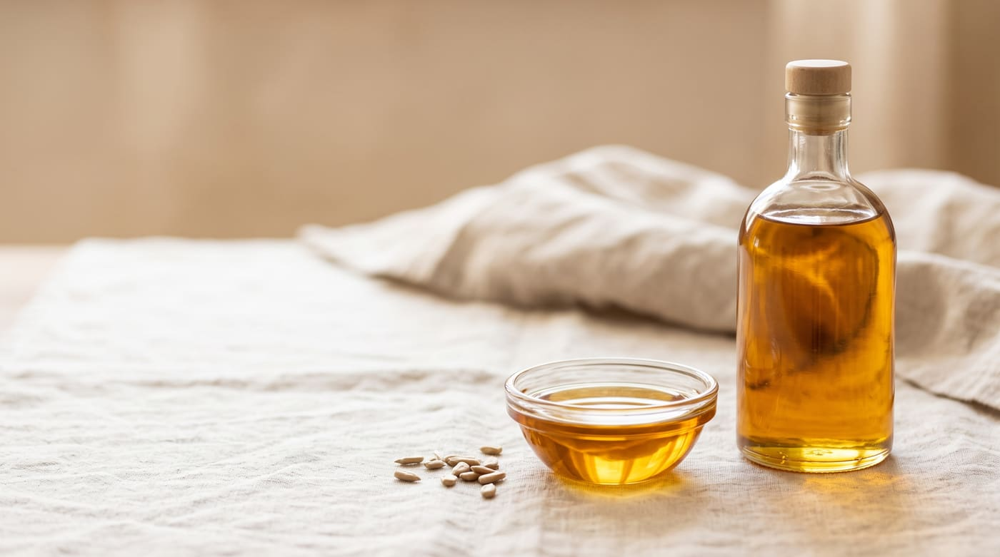
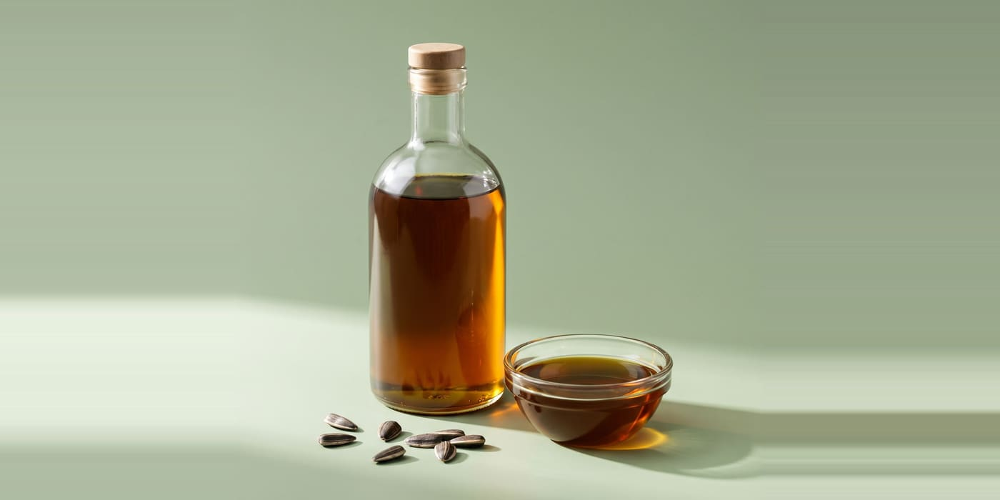
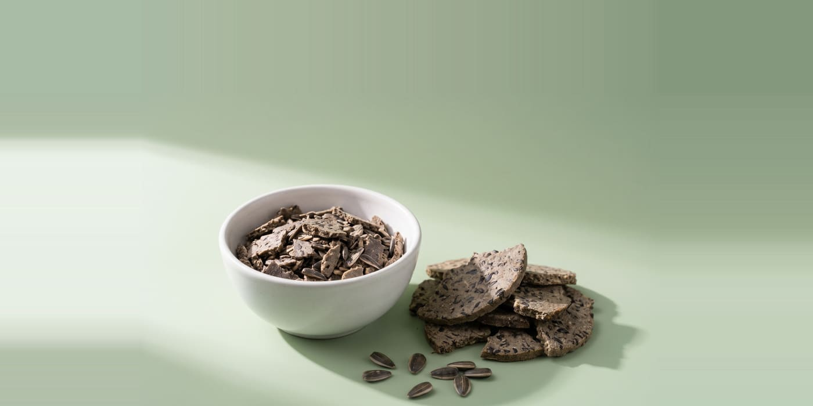
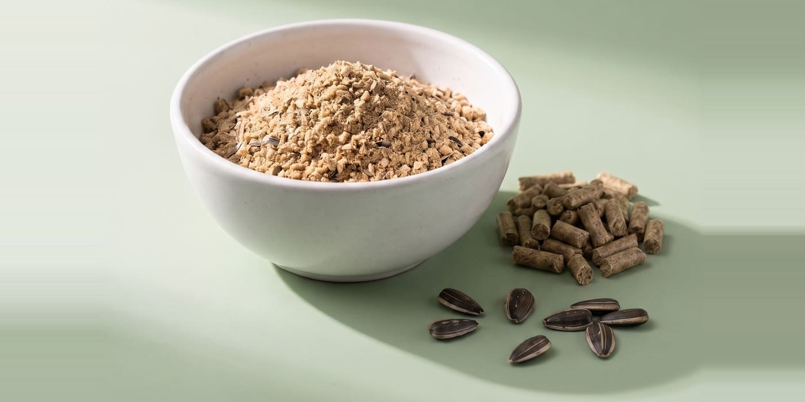
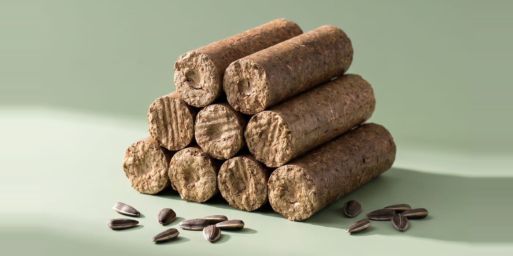

Продукція
Натуральний продукт із соняшнику
Керуючись принципами ESG та використовуючи сучасну технологію подвійного пресування, ми виробляємо високоякісні рослинні олії та цінні побічні продукти без хімічної екстракції.
Олія та макуха


Соняшникова олія
Отримуємо з насіння соняшнику технологією подвійного механічного віджиму, без застосування хімічних розчинників. Двоетапний процес пресування зберігає природні властивості сировини.
- Сировина
- Насіння соняшнику
- Технологія
- Подвійне механічне пресування
- Хімічні розчинники
- Не застосовуються
- Сертифікати
- ISO 22000 · Organic EU · Halal
Види олії
- Лінолева
- Сира, рафінована
- Високоолеїнова
- Сира, рафінована
- Органічна
- Лінолева, високоолеїнова
Якісні показники, обсяги, умови та терміни поставки запитуйте в наших фахівців.
Запит співпраці
Макуха соняшникова, ріпакова
Цінна макуха, яку ми отримуємо під час двоетапного пресування насіння соняшнику та ріпаку, без хімічних розчинників. Макуху соняшника виробляємо органічну та неорганічну.
- Сировина
- Насіння соняшнику та ріпаку
- Технологія
- Подвійне механічне пресування
- Сертифікати
- ISO 22000 · Organic EU · Halal
- Застосування
- Поживний компонент кормів для тварин.
Якісні показники макухи соняшникової
- Протеїн
- не менше 32,0 %
- Жир
- не менше 7,0 %
- Клітковина
- не більше 21,0 %
- Волога
- не більше 9,0 %
Протеїн, жир і клітковина — у перерахунку на сиру речовину.
Якісні показники, обсяги, умови та терміни поставки запитуйте в наших фахівців.
Запит співпраці
Гранули (пелети) з лушпиння соняшника
Виробляємо та реалізуємо паливні гранули з лушпиння соняшника.
- Сировина
- Лушпиння соняшника
- Вид палива
- Паливні гранули (пелети)
Якісні показники, обсяги, умови та терміни поставки запитуйте в наших фахівців.
Запит співпраці
Брикети з лушпиння соняшника
Виробляємо та реалізуємо паливні брикети з лушпиння соняшника. Вони горять із мінімальною кількістю диму, не «стріляють» і не іскрять, не потребують попереднього сушіння та можуть замінювати вугілля й дрова без модернізації котлів і печей.
- Сировина
- Лушпиння соняшника
- Теплота згоряння
- 17,5 МДж/кг
- Калорійність
- 4180 ккал
- Зольність
- 2,5–3 %
- Сірка
- 0,1 %
- Об’єм
- 1 т (≈ 1 м³) еквівалентна 3–4 м³ дров
- Фасування
- По 45 кг
Якісні показники, обсяги, умови та терміни поставки запитуйте в наших фахівців.
Запит співпраці- Телефон
- +38 044 228 11 97
- office@oliyatorg.ua
- Співпраця
- Стати партнером